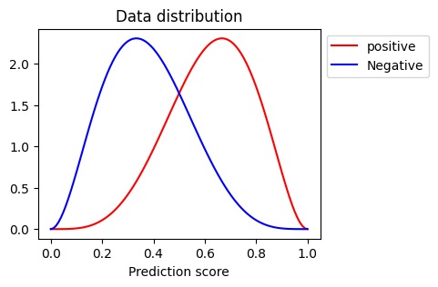
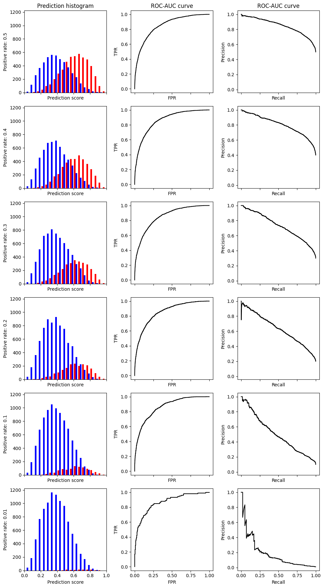
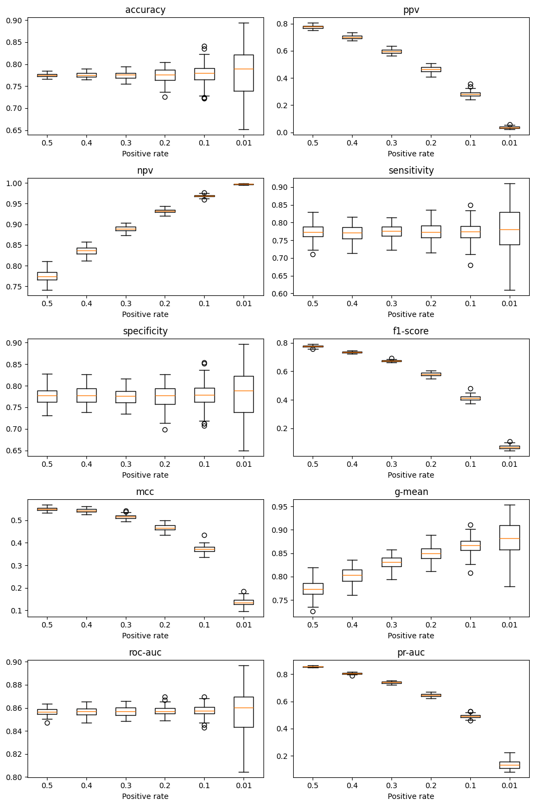

不均衡データに対する二値分類評価指標の挙動: 補足資料
Python言語で書いている
実験用コードの準備
class EvaluateSimulator:
def __init__(self, iter: int=100):
self.iter = iter
self.rng: np.ndarray = np.random.default_rng(seed=42)
self.scores: dict[str, dict[float, list[float]]] = {}
def scores_init(self) -> None:
self.scores = {
"accuracy": {},
"ppv": {},
"npv": {},
"sensitivity": {},
"specificity": {},
"f1-score": {},
"mcc": {},
"g-mean": {},
"roc-auc": {},
"pr-auc": {},
}
def process(self, posi_rates: list[float]) -> None:
self.scores_init()
for posi_rate in posi_rates:
for key in self.scores.keys():
self.scores[key][posi_rate] = []
for _ in range(self.iter):
y_true, y_pred = self.make_sample(posi_rate)
self.scores["roc-auc"][posi_rate].append(self.roc_auc(y_true, y_pred))
self.scores["pr-auc"][posi_rate].append(self.pr_auc(y_true, y_pred))
youden_thr = self.youden_index(y_true, y_pred)
cm = self.confusion_matrix(y_true, y_pred, youden_thr)
self.scores["accuracy"][posi_rate].append(self.accuracy(cm))
self.scores["ppv"][posi_rate].append(self.ppv(cm))
self.scores["npv"][posi_rate].append(self.npv(cm))
self.scores["sensitivity"][posi_rate].append(self.tpr(cm))
self.scores["specificity"][posi_rate].append(self.tnr(cm))
self.scores["f1-score"][posi_rate].append(self.f1(cm))
self.scores["mcc"][posi_rate].append(self.mcc(cm))
self.scores["g-mean"][posi_rate].append(self.g_mean(cm))
def make_sample(
self,
posi_rate: float,
sample_size: int = 10000,
alpha: float = 5,
beta: float = 3,
) -> tuple[np.ndarray, np.ndarray]:
posi_size = int(sample_size * posi_rate)
nega_size = sample_size - posi_size
y_true = np.concatenate(
[np.ones(posi_size), np.zeros(nega_size)],
axis=0
).astype(np.int64)
y_pred = np.concatenate(
[
self.rng.beta(size=posi_size, a=alpha, b=beta),
self.rng.beta(size=nega_size, a=beta, b=alpha),
],
axis=0,
).astype(np.float64)
return y_true, y_pred
@staticmethod
def roc_auc(y_true: np.ndarray, y_pred: np.ndarray) -> float:
return float(metrics.roc_auc_score(y_true, y_pred))
@staticmethod
def pr_auc(y_true: np.ndarray, y_pred: np.ndarray) -> float:
precision, recall, _ = metrics.precision_recall_curve(y_true, y_pred)
return float(metrics.auc(recall, precision))
@staticmethod
def youden_index(y_true: np.ndarray, y_pred: np.ndarray) -> float:
fpr, tpr, thr = metrics.roc_curve(y_true, y_pred)
return thr[np.argmax(tpr - fpr)]
@staticmethod
def confusion_matrix(
y_true: np.ndarray, y_pred: np.ndarray, thr: float = 0.5
) -> np.ndarray:
y_pred = np.where(y_pred > thr, 1, 0)
return metrics.confusion_matrix(y_true, y_pred).ravel()
@staticmethod
def accuracy(cm: np.ndarray) -> float:
return float((cm[0] + cm[3]) / np.sum(cm))
@staticmethod
def ppv(cm: np.ndarray) -> float:
return float(cm[3] / (cm[1] + cm[3]))
@staticmethod
def npv(cm: np.ndarray) -> float:
return float(cm[0] / (cm[0] + cm[2]))
@staticmethod
def tpr(cm: np.ndarray) -> float:
return float(cm[3] / (cm[2] + cm[3]))
@staticmethod
def tnr(cm: np.ndarray) -> float:
return float(cm[0] / (cm[0] + cm[1]))
@staticmethod
def f1(cm: np.ndarray) -> float:
return float(2 * cm[3] / (cm[1] + cm[2] + 2 * cm[3]))
@staticmethod
def mcc(cm: np.ndarray) -> float:
return float(
(
(cm[0] * cm[3] - cm[1] * cm[2])
/ np.sqrt(
(cm[1] + cm[3])
* (cm[2] + cm[3])
* (cm[0] + cm[2])
* (cm[0] + cm[1])
)
)
)
@staticmethod
def g_mean(cm: np.ndarray) -> float:
return float(
np.sqrt(
cm[3] / (cm[2] + cm[3]) * cm[0] / (cm[0] + cm[2])
)
)
eval_simulator = EvaluateSimulator()
posi_rates = [0.5, 0.4, 0.3, 0.2, 0.1, 0.01]仮想データの母集団分布
x = np.linspace(0, 1, 101)
y_p = stats.beta.pdf(x, 5, 3)
y_n = stats.beta.pdf(x, 3, 5)
plt.figure(figsize=(4, 3))
plt.plot(x, y_p, color="red", label="positive")
plt.plot(x, y_n, color="blue", label="Negative")
plt.title("Data distribution")
plt.xlabel("Prediction score")
plt.legend(loc='upper left', bbox_to_anchor=(1, 1))
plt.show()
plt.close()- 1
- 真に陽性群の母集団分布
- 2
- 真に陰性群の母集団分布

ROC-AUC曲線及びPR-AUC曲線の確認
def plot_pred(ax: plt.Axes, idx: int, y_true: np.ndarray, y_pred: np.ndarray):
ax.set_box_aspect(1)
ax.hist(
[
y_pred[y_true == 1],
y_pred[y_true == 0],
],
color=["red", "blue"],
bins=np.linspace(0, 1, 21)
)
ax.set_xlim([0, 1])
ax.set_ylabel(f"Positive rate: {posi_rate}")
ax.set_xlabel("Prediction score")
if idx == 0:
ax.set_title("Prediction histogram")
def plot_roc_auc(ax: plt.Axes, idx: int, y_true: np.ndarray, y_pred: np.ndarray):
fpr, tpr, _ = metrics.roc_curve(y_true, y_pred)
ax.set_box_aspect(1)
ax.plot(
fpr,
tpr,
color="black",
)
ax.set_xlabel("FPR")
ax.set_ylabel("TPR")
if idx == 0:
ax.set_title("ROC-AUC curve")
def plot_pr_auc(ax: plt.Axes, idx: int, y_true: np.ndarray, y_pred: np.ndarray):
precision, recall, _ = metrics.precision_recall_curve(y_true, y_pred)
ax.set_box_aspect(1)
ax.plot(
recall,
precision,
color="black",
)
ax.set_xlabel("Recall")
ax.set_ylabel("Precision")
if idx == 0:
ax.set_title("ROC-AUC curve")
fig, axes = plt.subplots(
6, 3, figsize=(10, 18), sharex="col", sharey="col", tight_layout=True
)
for idx, posi_rate in enumerate(posi_rates):
y_true, y_pred = eval_simulator.make_sample(posi_rate)
plot_pred(axes[idx][0], idx, y_true, y_pred)
plot_roc_auc(axes[idx][1], idx, y_true, y_pred)
plot_pr_auc(axes[idx][2], idx, y_true, y_pred)
plt.show()
plt.close()

仮想データによる分布、ROC-AUC曲線、PR-AUC曲線
反復試行による評価指標の比較
eval_simulator.process(posi_rates)
fig, axes = plt.subplots(5, 2, figsize=(10, 15), tight_layout=True)
for idx, key in enumerate(eval_simulator.scores.keys()):
axes[idx // 2][idx % 2].boxplot(
[eval_simulator.scores[key][posi_rate] for posi_rate in posi_rates],
tick_labels=posi_rates,
)
axes[idx // 2][idx % 2].set_title(key)
axes[idx // 2][idx % 2].set_xlabel("Positive rate")
plt.show()
plt.close()
